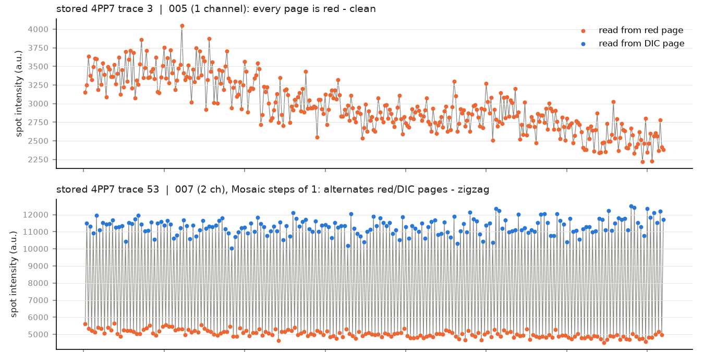
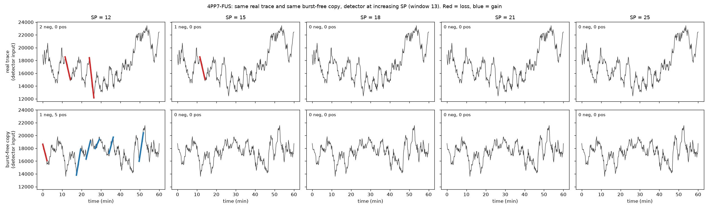
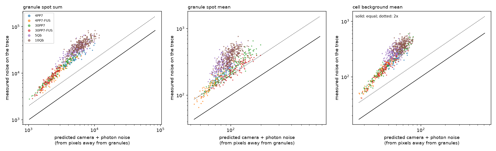
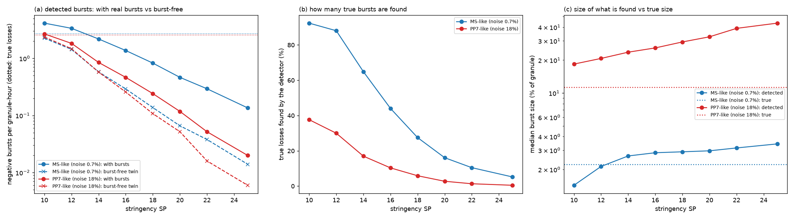
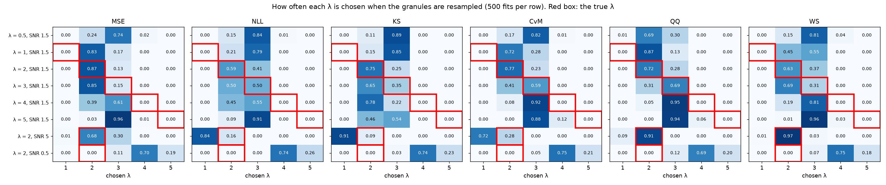
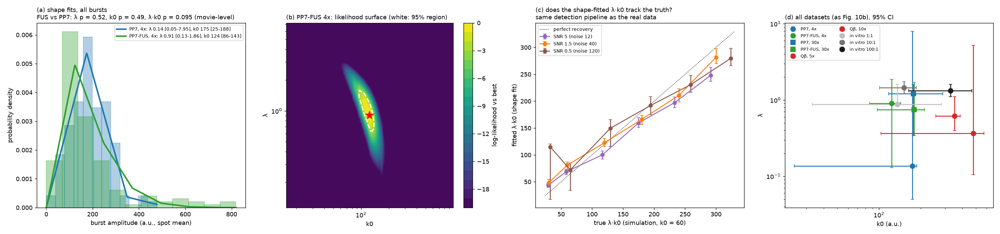
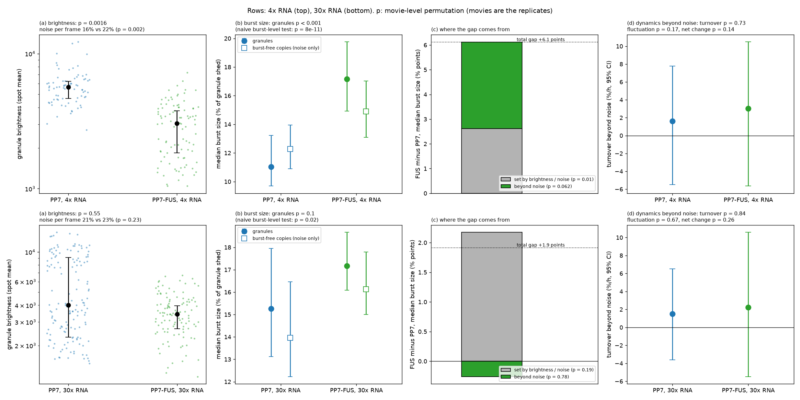
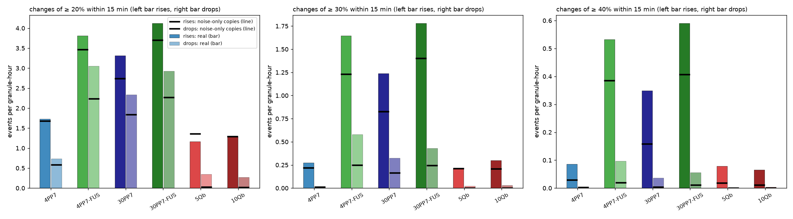
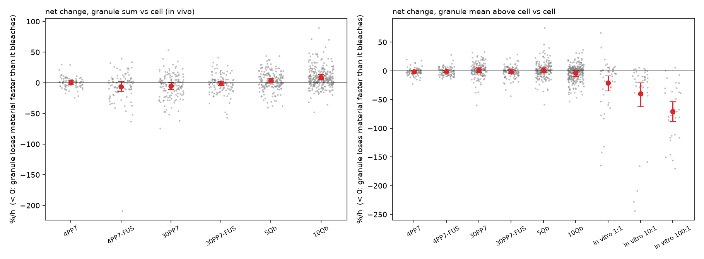

<title>GelMetrics Revision Summary</title>
<meta name="claude:viewport-fit-sides" content="cover">
<link rel="stylesheet" href="https://fonts.googleapis.com/css2?family=Literata:opsz,wght@7..72,500;7..72,650&family=IBM+Plex+Sans:wght@400;600&family=IBM+Plex+Mono:wght@400;500&display=swap">
<style>
/* Layout: single reading column (~68ch) with full-width figure panels; lab-notebook memo. */
:root {
  --bg: #fbfbfa; --fg: #1d2330; --muted: #5b6474; --line: #dfe2e7; --panel: #f0f2f5;
  --accent: #c8423a; --ok: #1f7a6e; --warn: #a8631a;
  --display: "Literata", Georgia, "Times New Roman", serif;
  --body: "IBM Plex Sans", "Segoe UI", system-ui, sans-serif;
  --mono: "IBM Plex Mono", ui-monospace, Consolas, monospace;
}
@media (prefers-color-scheme: dark) { :root:not([data-theme="light"]) {
  --bg: #14171d; --fg: #e4e7ec; --muted: #9aa3b2; --line: #2c323d; --panel: #1c2028;
  --accent: #ef7b70; --ok: #5cc2b2; --warn: #e3a35c; color-scheme: dark } }
:root[data-theme="dark"] {
  --bg: #14171d; --fg: #e4e7ec; --muted: #9aa3b2; --line: #2c323d; --panel: #1c2028;
  --accent: #ef7b70; --ok: #5cc2b2; --warn: #e3a35c; color-scheme: dark }
body { background: var(--bg); color: var(--fg); font: 16px/1.6 var(--body); }
main { max-width: 980px; margin: 0 auto; padding-block: 40px 72px;
  padding-left: max(16px, env(safe-area-inset-left, 0px)); padding-right: max(16px, env(safe-area-inset-right, 0px));
  display: grid; gap: 40px; }
h1, h2 { font-family: var(--display); font-weight: 650; text-wrap: balance; margin: 0; line-height: 1.2; }
h1 { font-size: 2.1rem; }
h2 { font-size: 1.4rem; }
.eyebrow { font: 500 .75rem/1 var(--mono); letter-spacing: .08em; text-transform: uppercase; color: var(--muted); }
.lede { color: var(--muted); max-width: 68ch; margin: 10px 0 0; }
section { display: grid; gap: 14px; min-width: 0; }
p, ul { margin: 0; max-width: 68ch; }
ul { padding-left: 1.2em; display: grid; gap: 6px; }
strong { font-weight: 600; }
.wrap { overflow-x: auto; border: 1px solid var(--line); border-radius: 6px; }
table { border-collapse: collapse; width: 100%; font-size: .9rem; }
th, td { text-align: left; padding: 8px 10px; border-bottom: 1px solid var(--line); vertical-align: top; }
th { font-weight: 600; background: var(--panel); white-space: nowrap; }
tr:last-child td { border-bottom: 0; }
td.n { font-family: var(--mono); font-variant-numeric: tabular-nums; white-space: nowrap; }
.tag { font: 500 .72rem/1 var(--mono); padding: 3px 7px; border-radius: 3px; white-space: nowrap; border: 1px solid currentColor; }
.ok { color: var(--ok); } .no { color: var(--accent); } .mid { color: var(--warn); }
figure { margin: 0; display: grid; gap: 8px; min-width: 0; }
figure img { width: 100%; height: auto; border: 1px solid var(--line); border-radius: 6px; background: #fff; }
figcaption { color: var(--muted); font-size: .92rem; max-width: 80ch; }
figcaption b { color: var(--fg); font-weight: 600; }
.foot { color: var(--muted); font-size: .85rem; border-top: 1px solid var(--line); padding-top: 14px; }
code { font-family: var(--mono); font-size: .85em; }
</style>

<main>
  <header>
    <div class="eyebrow">GelMetrics revision · manuscript VM10081E · 22 Oct 2026</div>
    <h1>What the re-analysis shows</h1>
    <p class="lede">Re-extracted from the raw movies (in vivo) and the stored traces (in vitro), branch <code>revision</code>. Every number below is in <code>analysis_outputs/RESULTS.md</code>, sections 1–35.</p>
  </header>

  <section>
    <h2>Main points</h2>
    <ul>
      <li><strong>A pipeline bug corrupted the PP7 traces.</strong> In two-channel movies (red + DIC) the brightfield DIC pages got mixed into the red signal. It is fixed and all in vivo data were re-extracted.</li>
      <li><strong>λ and k0 cannot be measured.</strong> The manuscript's fit (Eq. 1.9) returns λ ≈ 2–3 for any true λ, with every scoring method tried. Only λ·k0, i.e. the mean burst size, is recovered.</li>
      <li><strong>PP7 bursts are below the method's detection limit.</strong> Noise alone reproduces 88–94% of the detected PP7 turnover, and no stringency or smoothing setting fixes it. At PP7's noise level the detector finds only 30% of simulated true bursts. "No bursts" therefore does not mean "no exchange".</li>
      <li><strong>Robust differences:</strong> Qβ is more dynamic than PP7, and in vitro granules lose material faster at higher protein:RNA.</li>
      <li><strong>4x PP7-FUS vs PP7:</strong> FUS granules are 2× dimmer, which explains much of their larger apparent bursts. As a fraction of the granule, FUS shows more large slow changes (p = 0.003), but not more material exchanged in absolute terms. There is no difference at 30x.</li>
    </ul>
  </section>

  <section>
    <h2>Changes to the approach</h2>
    <div class="wrap"><table>
      <tr><th>Step</th><th>Manuscript</th><th>Revision</th></tr>
      <tr><td>Movies → traces</td><td>Tracked and read every TIFF page</td><td>Fluorescence channel only, frame/pixel indexing fixed, camera offset (200) removed</td></tr>
      <tr><td>Noise floor</td><td>None</td><td>Every trace gets a burst-free copy (same bleaching and noise); everything is reported as real minus copies</td></tr>
      <tr><td>Noise check</td><td>None</td><td>Synthetic unchanging granules (real image and track, calibrated camera noise) run through the same pipeline</td></tr>
      <tr><td>What is reported</td><td>Integer λ (1–5) and k0 from a WS grid fit</td><td>Burst size (median, mean ≈ λ·k0), burst size beyond noise, turnover beyond noise, net change beyond bleaching</td></tr>
      <tr><td>Statistics</td><td>None</td><td>95% CIs from resampling movies, then granules; p values by shuffling whole movies (movies are the replicates)</td></tr>
      <tr><td>Settings</td><td>SP 10–14 chosen per dataset</td><td>One shared setting (window 13, SP 12), plus full SP × window sensitivity</td></tr>
    </table></div>
  </section>

  <section>
    <h2>What we measure now</h2>
    <div class="wrap"><table>
      <tr><th>Dataset</th><th>Granules (movies)</th><th>Median burst</th><th>Burst size, real / noise copies</th><th>Turnover beyond noise, %/h</th><th>Net change, %/h</th></tr>
      <tr><td>PP7, 4x</td><td class="n">76 (9)</td><td class="n">187</td><td class="n">11.0 / 12.3%</td><td class="n">1.6 [−5.1, 7.9]</td><td class="n">0.7 [−3.5, 4.4]</td></tr>
      <tr><td>PP7-FUS, 4x</td><td class="n">94 (12)</td><td class="n">132</td><td class="n">17.2 / 14.9%</td><td class="n">3.0 [−5.9, 10.4]</td><td class="n">−6.6 [−14.9, 1.5]</td></tr>
      <tr><td>PP7, 30x</td><td class="n">145 (8)</td><td class="n">210</td><td class="n">15.3 / 14.0%</td><td class="n">1.5 [−3.9, 7.5]</td><td class="n">−5.1 [−11.5, 0.7]</td></tr>
      <tr><td>PP7-FUS, 30x</td><td class="n">111 (8)</td><td class="n">209</td><td class="n">17.2 / 16.1%</td><td class="n">2.2 [−5.9, 10.8]</td><td class="n">−1.3 [−4.5, 1.9]</td></tr>
      <tr><td>Qβ, 5x</td><td class="n">191 (10)</td><td class="n">386</td><td class="n">9.2 / 7.2%</td><td class="n ok">9.3 [5.3, 13.5]</td><td class="n">3.5 [−0.3, 7.5]</td></tr>
      <tr><td>Qβ, 10x</td><td class="n">279 (9)</td><td class="n">535</td><td class="n">9.1 / 6.6%</td><td class="n ok">9.7 [6.4, 13.3]</td><td class="n ok">8.9 [5.4, 13.5]</td></tr>
      <tr><td>In vitro 1:1</td><td class="n">45</td><td class="n">36</td><td class="n">7.9 / 10.4%</td><td class="n">8.8 [−2.8, 21.5]</td><td class="n no">−21.1 [−35.1, −8.8]</td></tr>
      <tr><td>In vitro 10:1</td><td class="n">37</td><td class="n">86</td><td class="n">12.2 / 8.8%</td><td class="n ok">50.1 [27.9, 74.2]</td><td class="n no">−39.7 [−62.5, −20.2]</td></tr>
      <tr><td>In vitro 100:1</td><td class="n">31</td><td class="n">118</td><td class="n">15.2 / 10.0%</td><td class="n ok">46.2 [17.0, 78.7]</td><td class="n no">−70.8 [−88.1, −54.3]</td></tr>
    </table></div>
    <p class="lede">Median burst in manuscript units (spot mean); burst sizes as % of the granule shed per burst; 95% CI in brackets. Coloured values have a CI that excludes zero. Window 13, SP 12, all bursts.</p>
  </section>

  <section>
    <h2>Manuscript claims</h2>
    <div class="wrap"><table>
      <tr><th>Claim</th><th>Status</th><th>What the data support</th></tr>
      <tr><td>PP7 granules: λ = 1, gel-like</td><td><span class="tag no">not supported</span></td><td>λ not measurable; PP7 dynamics below the detection limit</td></tr>
      <tr><td>Qβ: λ = 4, brittle</td><td><span class="tag mid">reframed</span></td><td>Qβ is clearly more dynamic than PP7; λ not measurable</td></tr>
      <tr><td>FUS raises λ at low valency</td><td><span class="tag mid">reframed, weak</span></td><td>FUS 4x granules are dimmer and change more as a fraction of themselves (p 0.003); not more in absolute amount</td></tr>
      <tr><td>No FUS effect at high valency</td><td><span class="tag ok">supported</span></td><td>No difference in any measure at 30x</td></tr>
      <tr><td>In vitro k0 grows with protein</td><td><span class="tag mid">reframed</span></td><td>Burst size and net loss grow with protein:RNA</td></tr>
    </table></div>
  </section>

  <section>
    <h2>Figures</h2>
    <figure>
      
      <figcaption><b>The pipeline bug.</b> Top: a normal trace from a one-channel movie. Bottom: a trace from a two-channel movie that alternates between fluorescence (orange) and brightfield (blue) pages, the "zigzag". The original code reproduces the stored traces exactly, so this is what the published data contained.</figcaption>
    </figure>
    <figure>
      
      <figcaption><b>Real trace vs burst-free copy.</b> At SP 12 the detector calls bursts in both. Raising SP removes them from both: from SP 18 neither shows any. Detected PP7 bursts are not distinguishable from noise at any SP.</figcaption>
    </figure>
    <figure>
      
      <figcaption><b>Where the noise comes from.</b> Traces are 2–6× noisier than camera noise predicts, and so is the cell background, which has no bursts. The cause is the granule mask being recomputed every frame (it changes 11–28% every 10 s), so the noise is measurement, not dynamics.</figcaption>
    </figure>
    <figure>
      
      <figcaption><b>The detection limit (simulation with known bursts).</b> With the manuscript's simulation noise (0.7%) the detector finds most bursts. With PP7's real noise (18%) it finds 30% at SP 12, and only 6% at SP 18, at 3× their true size. The manuscript's simulation was about 25× less noisy than the real data.</figcaption>
    </figure>
    <figure>
      
      <figcaption><b>Fig. 13 revisited: λ is not recovered.</b> For simulated data with known λ (red boxes), six scoring methods pick λ ≈ 2–3 regardless of the truth. The fitted λ also follows the noise level: true λ 2 is fitted as 1, 2 or 4 as SNR drops. Counting the true λ in the top 3 of 5 as a success gives 62%, against 60% for a random pick.</figcaption>
    </figure>
    <figure>
      
      <figcaption><b>What can be recovered: λ·k0.</b> Fitting only the shape of the burst-size distribution, the product λ·k0 tracks the true value in simulations (third panel), while λ and k0 separately do not. In vivo λ is mostly below 1, where the product is unstable, so the median or mean burst size is the number to report.</figcaption>
    </figure>
    <figure>
      
      <figcaption><b>4x FUS vs PP7.</b> FUS granules are 2× dimmer (a), so pure noise already gives them larger relative bursts. Of the 6.1-point gap in burst size, 2.6 points come from that alone (c), and 3.5 points are beyond noise (one-sided p 0.031; two-sided 0.061). Turnover beyond noise does not differ (d). At 30x (bottom) nothing differs.</figcaption>
    </figure>
    <figure>
      
      <figcaption><b>Large slow changes the detector misses.</b> Counting rises and falls of ≥ 20/30/40% within 15 min, 4x FUS granules (green) exceed their noise copies (black lines) more than 4x PP7 does (p 0.003 at 30%). Counted as a fixed amount of light instead of a fraction, the FUS excess disappears: FUS granules change more relative to their own, smaller size.</figcaption>
    </figure>
    <figure>
      
      <figcaption><b>Net gain or loss beyond bleaching.</b> Each granule's fade rate compared with its own cell background (same protein, same light); no burst detection involved. In vivo granules are in balance. In vitro granules lose material, more at higher protein:RNA (−21, −40, −71 %/h).</figcaption>
    </figure>
  </section>

  <section>
    <h2>Gaps and limits</h2>
    <ul>
      <li><strong>No static control sample.</strong> All noise controls are modelled. A fixed or crosslinked granule movie would test focus drift and granule movement directly.</li>
      <li><strong>In vitro raw movies do not exist,</strong> so in vitro rests on the stored traces (camera offset assumed). Focus drift could also look like net loss.</li>
      <li><strong>Sample size.</strong> A firm 4x FUS claim needs about 2–5× more movies per condition; more granules per movie help less than more movies.</li>
      <li><strong>Extraction alternatives.</strong> Steady thresholds lower the noise but add a slow artefact. A fixed mask lowers it 4×, but its slow signal in PP7 follows granule movement. The published per-frame masks stay the main analysis.</li>
      <li><strong>Not done yet:</strong> first vs second half of each movie (ageing); which event durations the smoothing window suppresses.</li>
    </ul>
  </section>

  <section>
    <h2>Decisions to make</h2>
    <ul>
      <li>Report burst size (median, mean ≈ λ·k0), turnover beyond noise and net change, each with its noise control, instead of λ and k0.</li>
      <li>4x FUS: present it as a fractional, brightness-dependent effect, or collect more movies first.</li>
      <li>State plainly that PP7 dynamics are below this method's detection limit at current imaging noise.</li>
    </ul>
  </section>

  <p class="foot">Code and outputs: github.com/amitnelkin/gelMetrics_AN, branch revision. Section-by-section detail: analysis_outputs/RESULTS.md. Summary deck: analysis_outputs/deck/GelMetrics_revision_summary.pptx.</p>
</main>
